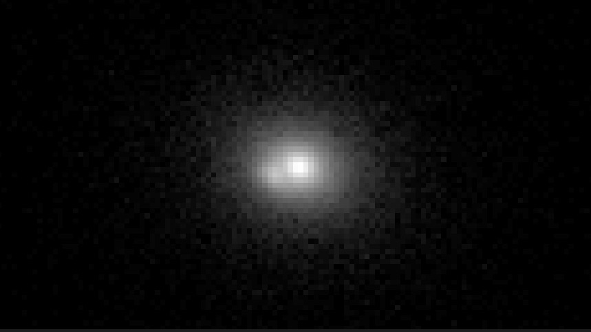
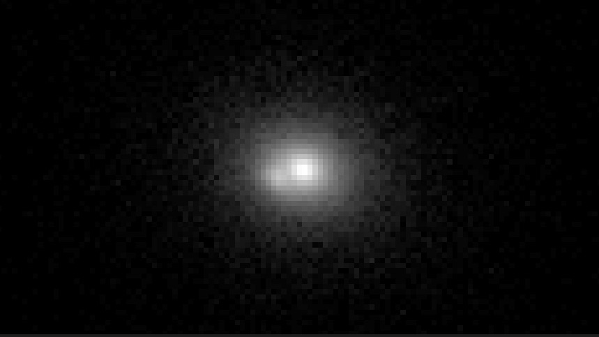

This is the homepage of SMTomsky
Links Page View our Lensed Galaxy Images Our Host Repository
Gravitational Lensing in Action
 Simulated Images of Lensed Galaxies
Simulated Images of Lensed Galaxies

 
